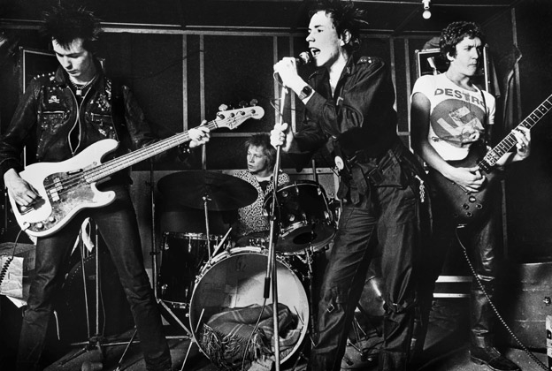
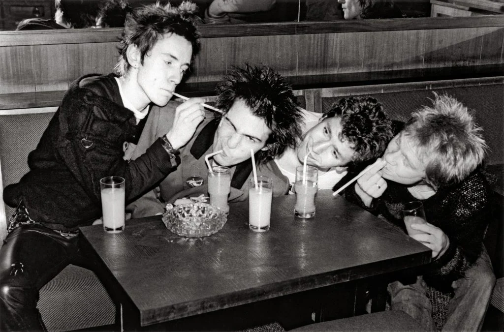
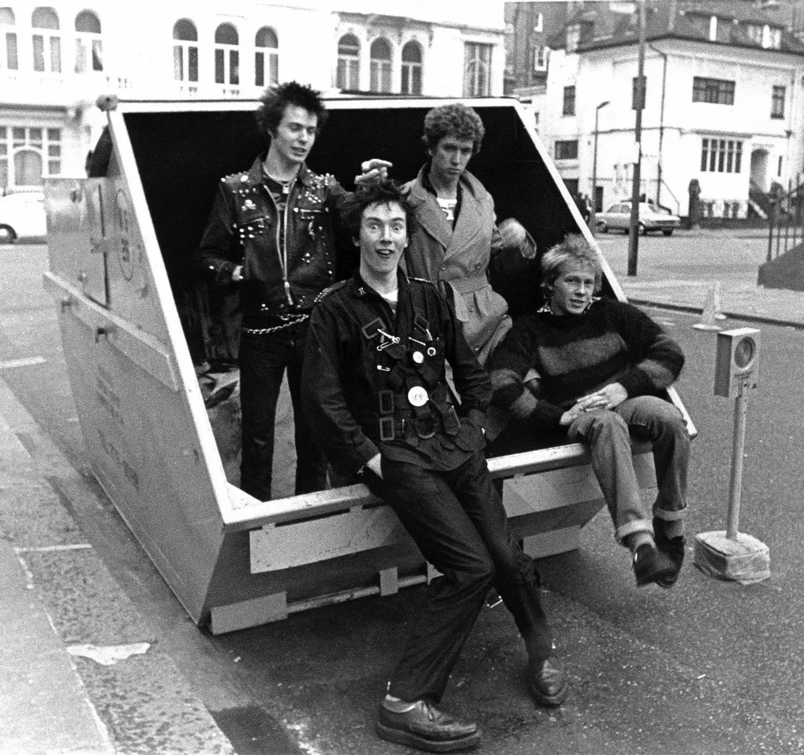
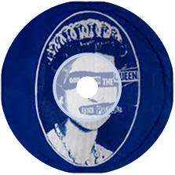
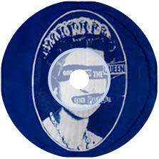

1977, UK
Sex Pistols는 처음부터 음악을 하려던 사람들은 아니었다.
1975년, 런던의 한 낡은 옷가게에서 시작된 이 밴드는 불만과 무질서의 결정체였다. 기타를 제대로
잡을 줄도 몰랐고, 보컬은 날을 세운 채 세상을 욕할 줄만 알았다. 하지만 그들은
당대 영국 청년들의 분노, 무력감, 그리고 혐오감을 가장 직접적으로 표출한 존재였다.
밴드의 얼굴이자 리드 보컬인 Johnny Rotten(본명 John Lydon)은 항상 뾰족했고,
씹고 뱉듯 가사를 던졌다. 그는 기성 세대와 언론, 왕실과 정치인들 모두를 적으로 돌렸다. 록스타가 되기보단
세상을 망신주고 싶었던 그의 말투와 태도는, 사람들을 불편하게 만들었지만 동시에 카타르시스를 줬다.
기타리스트 Steve Jones, 드러머 Paul Cook, 그리고 카리스마와 파괴 본능만으로 무장한
Sid Vicious는 “밴드”라는 형식을 빌려, 체제 그 자체에 대한 모욕을 퍼부었다.
Sex Pistols는 예술도 아니고 음악도 아니었다. 그들은 하나의
반사회적 퍼포먼스였고, 시대의 병리 현상이었다.
불과 2년. 단 하나의 앨범. 그리고 해체.
하지만 그 짧은 시간 동안, 그들은 영국 왕실을 공개적으로 조롱하고, 언론을 뒤집어엎으며,
수많은 청년들에게 이렇게 말했다.
“너희가 미쳐 있는 게 아니야. 세상이 미친 거야.”
언론은 그들을 악마처럼 묘사했고, 정부는 그들의 이름을 차트에서 지웠다. 공연은 취소됐고,
매장에서는 앨범 판매를 거부했다. 그러나 그들은 멈추지 않았다.
결국 Sex Pistols는 펑크의 아이콘이 아니라, 영국 사회가 숨기고 싶어 했던 얼굴 그 자체였다.
기타리스트 Steve Jones, 드러머 Paul Cook, 그리고 카리스마와 파괴 본능만으로 무장한
Sid Vicious는 “밴드”라는 형식을 빌려, 체제 그 자체에 대한 모욕을 퍼부었다.
그들의 파괴는 끝났고, 밴드는 사라졌지만 그들이 일으킨 균열은 지금도 여전히, 귓가에 울린다.
1970년대 후반, 영국은 망가진 나라였다.
청년들은 일자리가 없었고, 대학을 나와도 미래가 없었다.
거리는 쓰레기로 넘쳐났고, 파업은 일상이었으며, 빈부격차는 점점 벌어지고 있었다.
노동계급은 분노했고, 중산층은 불안했으며, 귀족 계층은 그 위에 앉아 침묵하고 있었다.
그리고, 그 모든 불균형과 절망의 상징 위에 ‘여왕’이 있었다.
Sex Pistols는 바로 그 정중하고 고요한 위선에 대고 욕설처럼 음악을 던졌다.
“God save the Queen. She ain’t no human being. There is no future. In England’s dreaming.”
그 가사는 단지 왕실에 대한 모욕이 아니었다.
그건 한 세대가 전체 체제에 대해 퍼부은 저주였고,
한 사회가 스스로를 기만해온 역사에 대한 선언이었다.
국가는 깨어졌고, 청년은 희망을 잃었고, 음악은 그 사실을 폭로했다.
그래서 이 노래는 금지되었다.
BBC는 전면 방송을 중단했고, 음반 매장은 판매를 거부했으며,
공영 차트는 그 곡이 실질적으로 1위였음에도 불구하고 의도적으로 순위를 조작해 2위에 머물게 했다.
이 노래가 들리면, 사람들은 더 이상 거짓에 고개를 숙이지 않게 되니까.
왕실은 더 이상 신성불가침이 아니고, 애국심은 허울뿐이라는 걸 알게 되니까.
하지만 아이러니하게도, 이 노래는 그 검열 덕분에 더 멀리 퍼졌다.
‘God Save the Queen’은 영국 역사상 가장 유명한 ‘검열된 노래’가 되었고,
동시에 가장 날카로운 ‘진실의 기록’이 되었다.

God save the queen
하나님, 여왕을 보호하소서
The fascist regime
파시스트 정권을 말야
They made you a moron
그들은 널 멍청이로 만들었지
Potential H-bomb
잠재적 수소폭탄으로 말이야
God save the queen
하나님, 여왕을 보호하소서
She ain't no human being
그녀는 인간이 아니야
There is no future
영국의 꿈에서
In England's dreaming
미래란 없다
Don't be told what you want
네가 원하는 것을 말하지마
Don't be told what you need
네가 필요한 것을 말하지 마
There's no future, no future,
미래란 없어, 미래란 없어,
FNo future for you
너에게 미래란 없다
God save the queen
하나님, 여왕을 보호하소서
We mean it man
이건 진심이야
We love our queen
우리는 여왕 폐하를 사랑해
God saves
하나님이시여, 보호하소서
God save the queen
하나님, 여왕을 보호하소서
Cause tourists are money
관광객들은 돈이 되니까 말이야
And our figurehead
우리의 여왕 폐하는 우리 눈으로 보기에
Is not what she seems
보이는 것이 다가 아니야
Oh God save history
하나님, 역사를 구하소서
God save your mad parade
하나님, 그대의 정신병같은 행진을 구하소서
Oh Lord God have mercy
오 하나님은 자비로우시네
All crimes are paid
모든 범죄는 그 죗값을 치렀지
When there's no future
미래가 없을 때에는
How can there be sin
어떻게 죄악이란게 있을 수 있지?
We're the flowers in the dustbin
우리는 쓰레기통 안에 핀 꽃이야
We're the poison in your human machine
우리는 네 기계 인간의 독이야
We're the future, your future
우리가 미래야, 우리가 미래지
God save the queen
하나님, 여왕을 보호하소서
We mean it man
이건 진심이야
We love our queen
우리는 여왕 폐하를 사랑해
God saves
하나님이시여, 보호하소서
God save the queen
하나님, 여왕을 보호하소서
We mean it man
이건 진심이야
And there is no future
그리고 미래는 없어
In England's dreaming
영국의 꿈에서
No future, no future,
미래는 없어, 미래란 없어,
No future for you
너에게 미래 따위는 없어
No future, no future,
미래는 없어, 미래란 없어,
No future for me
나에게도 미래 따위는 없어
No future, no future,
미래는 없어, 미래란 없어,
No future for you
너에게 미래 따위는 없어
No future, no future,
미래는 없어, 미래란 없어,
For you
너에게 미래 따위는 없어.


 
